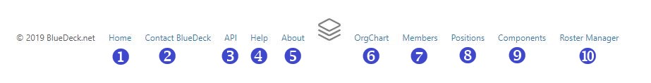

Footer Menu
The footer menu offers quick access to additional BlueDeck resources. Depending on the status of your account, you may see some or all of the following links:

- Home: this link will take you to your Home Page
- Contact BlueDeck: this link will open your Email client with a blank message to the BlueDeck Administrator.
- API: this link will take you to the BlueDeck REST API Portal, which contains documentation about how to connect BlueDeck data to your own project.
- Help: this link will bring you to this help site.
- About: this link will take you to the "ABout BlueDeck" page.
- OrgChart: this link will take you to the Organization Chart page, where you can view and search organization charts.
- Members: this link will take you to the Members Index, where you can search for and view details about the Members of your organization.
- Positions: this link will take you to the Positions Index, where you can search for and view details about the Positions in your organization.
- Components: this link will take you to the Components Index, where you can search for and view details about the Components that make up your organization.
- Roster Manager: (Manager/Assistant Manager Only) this link will take you to the Roster Manager. The Roster Manager is only available to Members who have active BlueDeck accounts and are currently assigned to a Position that is designated as the Manager/AssistantManager of an organizational Component. The Roster Manager allows Managers to manage the Positions and Members within their assigned and subordinate Components using a drag-and-drop interface.